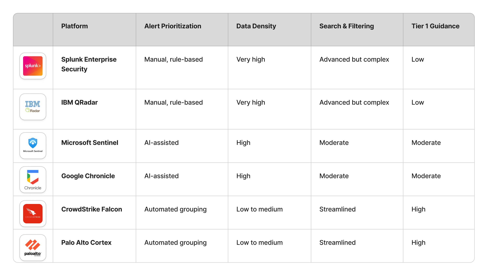
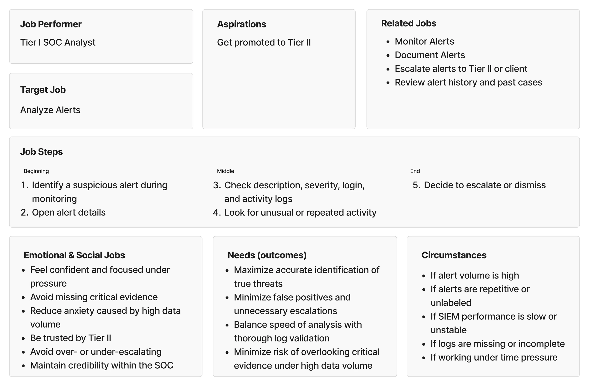
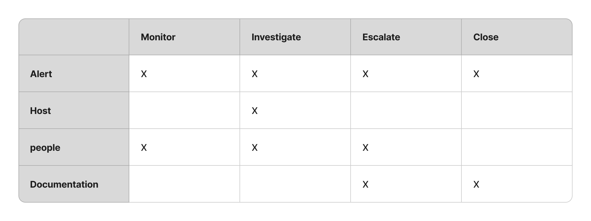
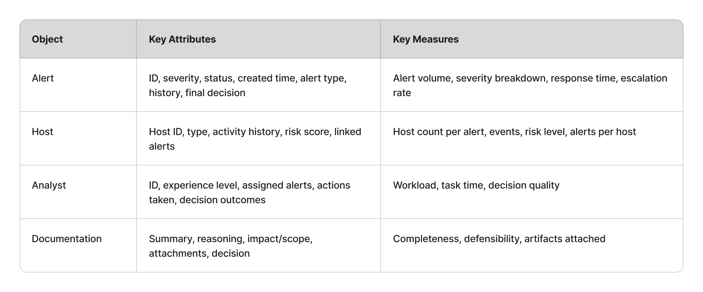
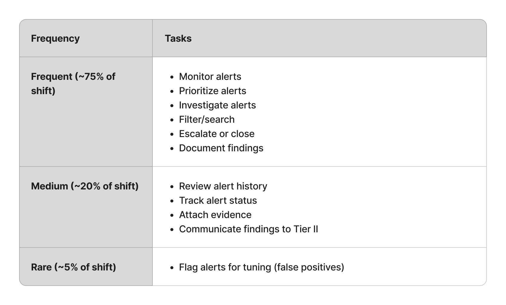
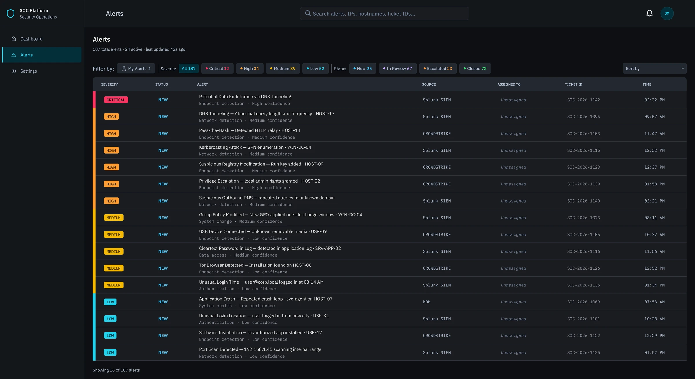

01
Project overview
This project began with a question I couldn't stop thinking about after working as a UX designer at Opsin, a cybersecurity company: what does it actually feel like to be a SOC analyst staring at a dashboard for hours, trying to catch a real threat buried inside hundreds of alerts?
Alert fatigue is one of the most pressing human factors challenges in cybersecurity. Analysts working in Security Operations Centers are responsible for monitoring, triaging, and escalating security alerts in real time — often across multiple client environments, on long shifts, with tools that weren't designed with their cognitive limits in mind. The consequences aren't abstract: a missed alert can mean a real breach.
For my graduate capstone, I applied a full User-Centered Design process to this problem — nine months of research, concept development, design, and usability testing, supported throughout by a faculty adviser. I also integrated AI throughout the process — using Otter.ai for interview transcription and Claude for research synthesis, brainstorming, and content iteration. The project let me go deeper into the cybersecurity domain and explore something I find genuinely fascinating: how small, precise design decisions — the micro interactions of an interface — can directly affect a person's ability to detect risk under pressure.
Rather than redesigning an entire platform, I focused on a specific and underexplored slice: how the design of alert displays, prioritization systems, and filtering tools affects Tier 1 SOC analyst performance and well-being. Every decision was grounded in real analyst workflows and a research process designed to surface what task analysis alone rarely reveals.
02
Problem & goal
Problem
SOC analysts face overwhelming alert volumes from dashboards that generate repetitive, low-priority notifications — making it difficult to distinguish real threats from noise.
Goal
Reduce alert fatigue and improve Tier 1 SOC analyst performance and well-being through evidence-based dashboard design.
03
Research
Competitive analysis
6 SOC platforms were analyzed across alert display, prioritization, filtering, data density, and AI features. What was learned:
- Platforms are largely optimized for Tier 2/3 — Tier 1 needs are underserved
- Alert noise is a recognized problem, but design solutions are inconsistent
- No platform offers a unified, Tier 1-centered alert experience

Interviews
5 semi-structured interviews with Tier 1 SOC analysts, conducted over Zoom. Sessions explored daily workflows, pain points, tools used, and mental models around alert triage.
-
Finding 01
Alert volume is overwhelming and unlabeled
Tier 1 analysts face ~2,000 alerts per shift with no severity labels — relying entirely on experience and pattern recognition to prioritize. Without clear labeling, determining where to start was itself a cognitive task.
-
Finding 02
Too many tools, too much context-switching
Participants used a minimum of 5–7 systems per investigation. One analyst identified navigating across tabs to find evidence and artifacts as the single thing she'd most want to change about her workflow.
04
Jobs-to-be-done
Jobs To Be Done is a framework that shifts the focus from what users do to why they do it — capturing not just tasks and steps, but the goals, emotional pressures, social stakes, and circumstances that surround them. I chose JTBD because SOC analyst work is deeply context-dependent: the same task feels entirely different at 3am on a night shift versus mid-morning with a full team. A task-based framework would have missed that.
I mapped three jobs: monitoring alerts, analyzing alerts, and documenting and reporting. Below is the canvas for the primary one, analyzing alerts — the most time-consuming and highest-stakes of the three.

05
Conceptual models
Before any sketching or prototyping began, a conceptual model was developed to define what the system needs to support — grounded in how Tier 1 analysts actually think about and perform their work. As Johnson and Henderson (2013) describe, a conceptual model defines abstractly what users can do with a system and what concepts they need to be aware of, in terms of tasks rather than screen graphics. The model was built in three layers, each directly informed by the JTBD analysis and interview findings.
Mapping the core objects analysts interact with against their four primary actions. Alert emerged as the most critical object — involved in all four actions — directly reinforcing the focus on the alert triage experience.

Defining what information each object carries and how performance is tracked. Drawn directly from interviews — analysts consistently needed severity, status, time, and alert type at a glance. This step directly informed decisions around data density and alert display.

Ranking tasks by frequency across a shift to determine what needs to be immediately visible versus what can require additional navigation. Prioritization was driven entirely by research — never assumed.

06
Wireframes
Every wireframe decision mapped directly to a JTBD job step or pain point. Core structural decisions included:
- Severity-first alert hierarchy
- Compact default view with expandable detail
- Filtering toolbar accessible during active triage
- Alert detail panel — full context without navigating away
07
High-fidelity prototype
Four core screens, tested with analysts before the final iteration. Dark mode was chosen deliberately to reduce eye strain during long shifts, with cyan reserved for interactive elements and a semantic color system for severity.
08
Usability testing
5 Tier 1 SOC analysts completed 4 scenario-based tasks over Zoom, followed by a System Usability Scale (SUS) questionnaire.
SUS score
The System Usability Scale is a 10-question survey scored from 0 to 100. Participants filled it in after completing the tasks.83.75/100
Good- 60%Avg success rate, no failures
- 0.5Avg assists per task
- 4.4/5Avg confidence
What worked
- Dashboard orientation was immediate — all participants identified where to start without assistance
- Alert detail panel gave the right context without requiring extra navigation
- Guided documentation form reduced anxiety — described as quick and aligned with real workflow
- Similar alerts panel surfaced context that current tools don't provide
- AI suggestions felt non-intrusive — analysts appreciated staying in control of the final decision
What didn't work
- Filtering toolbar went unnoticed by all participants — 0% full success on Task 2
- Alert status column not visible enough — nearly caused a wrong alert selection
- Ambiguous alert description language caused hesitation during investigation
- Event timeline direction was unclear — one participant read it in the wrong order
- AI evidence panel label was confusing — purpose unclear before explanation
09
Final iteration
Testing pointed to one screen: the alert queue. Both changes below were made there, and every other screen held up as designed.


What testing showed
Sort order & status
Alerts were sorted by time rather than urgency, and the status column sat far right. Analysts nearly picked alerts already under review because they couldn't see status at a glance.
Filtering toolbar
No participant noticed or used the filtering toolbar or sort dropdown. Neither had enough visual weight to draw attention without instruction.
What changed
Sort order & status
Default sort is now critical, then unassigned, then oldest first. Status moved right after severity, and a colored bar on each row gives severity at a glance.
Filtering toolbar
The toolbar and sort dropdown got stronger visual weight, and a "Filter by:" label at the far left makes their purpose clear.
10
Learnings
-
01
Design for the sixth hour of a shift, not the first
Every decision was tested against: does this hold up under fatigue and time pressure? The SOC dashboard isn't just a data display — it's a cognitive tool used in high-stakes, high-volume conditions. That lens changed how I approached every single design choice.
-
02
JTBD surfaces what task analysis misses
The emotional and social dimensions of analyst work — credibility, pressure, trust — shaped design decisions as much as the functional requirements. Choosing JTBD over a purely task-based framework meant the design was built around the whole person, not just the workflow.
-
03
Discoverability is as important as capability
A feature that isn't found isn't a feature. The filtering toolbar failure in testing made this concrete — every participant missed it entirely. It was a clear reminder that designing a tool and designing for its discovery are two separate problems.